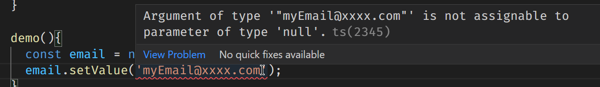
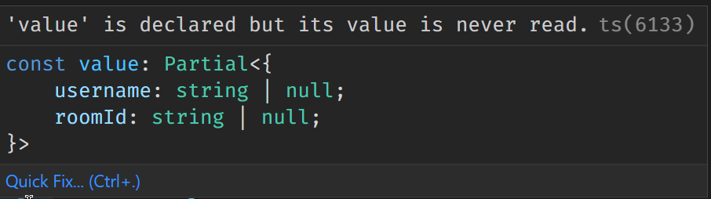

[Angular] Typed Form study notes
Angular 14 推出 Typed Form 的功能，利用中秋放假的時間，好好地將這個功能給仔細玩過一次，掌握好才能在專案上使用到
基本元素
Angular 13 有 FormGroup、FormControl、FormArray、FormBuilder，而在 Angular 14 裡原本的這些 FormControl 都會變成 UntypedFormGroup、UntypedFormControl、UnTypedFormArray、UnTypedFormBuilder (透過 ng update 時，Angular 會更換成這些類別)，在 Angular 14 以後的 FormGroup、FormControl、FormArray、FormBuilder 都具有型別了，另外還有一個 FormRecord 的新類別，後面會介紹到他
使用 Typed Form 的好處是在開發時期就可以知道表單型別，避免一些不必要的錯誤，也可以針對 null 的狀況作防範，有好處就一定有壞處，如果遇到比較動態類型的表單，使用 Typed Form 就比較綁手綁腳，這時候可以退回使用 UnTyped 版本的
FormControl
FormControl 在 Typed Form 下多了幾個特性，下面一一說明
Nullability
表單中最基本成員，寫法與 API 跟之前一模一樣
1 | const email = new FormControl('myEmail@xxx.com'); |
FormControl 執行 reset() 時，預設會變成 null，但這件事情在 Angular 14 的時候多了一個選項，可以在建立 FormControl 時，設定 {nonNullable: true}，這時候當執行 reset() 時，就會回到一開始建立 FormControl 所賦予的預設值
1 | const email = new FormControl('myEmail@xxx.com', {nonNullable: true}); |
這特性很重要，可以避免很多不必要的 null 處理
Specifying an Explicit Type
既然是有型別的 FormControl，指定 FormControl 的型別後，一旦設定不符合型別的值就會通知 invalid 了
1 | const email = new FormControl(null); |

要迴避這問題的解法有兩種
- 用空字串做預設值
- 設定
FormControl<string | null>
FormArray
如果 FormArray 內只會有同一種型別的 Control，可以直接使用 FormArray，如果是多種類型，例如同時有 FormGroup、FormControl，那就要使用 UntypedFormArray 了
FormGroup
FormGroup 的 value 與 getRawValue 會回傳不同型別的結果，其實也蠻符合應有的行為
1 | const group = new FormGroup({ |
以這段程式碼來說，value 會自動判斷為這個型別

為什麼會有這樣的型別推導呢，理由有兩個
- 一開始與初始化時是使用
new FormControl('')，即表示這個FormControl的值有可能是string | null，假設這邊有多設定nonNullable: true時，就可以明確知道FormControl的值一定不會有null發生 - 當
FormGroup裡的FormControl是disabled時，FormGroup.value裡就不會有該FormControl的值，所以這邊使用Partial十分合理
換句話說，FormGroup.getRawValue() 的回傳值型別推導就會是
1 | { |
進一步看 FormGroup 的使用指定型別，一旦指定型別後，Angular 就會檢查相關的資料結構，一但有破壞資料結構的行為出現，就會出現錯誤提示
1 | interface MyForm { |
上述範例就是要移除一個必須要存在的 username ，這時候就會出現錯誤提示，反之，如果要額外加入 FormControl，一樣會噴錯，這表示我們可以透過 interface 的定義來保護 FormGroup 最後輸出資料的結構完整性
FormRecord
假設我們真的需要動態的新增或移除 FormControl 時該怎麼辦呢? 這時候可以使用 FormRecord，FormRecord 跟 FormGroup 一樣，只是他在型別上就沒有那麼要求了，可以讓我們自由的新增移除 control，但這裡有一個限制就是，只能增修同一種類型的物件，如果想要不同類型物件的增減，就得回到 UntypedFormGroup 了
1 | this.fb.record<FormControl<string | null>>({ |
FormBuilder
預設的 FormBuilder 建立出來的 FormControl 都是 nonNullable: false 的狀態，如果想要 FormControl 都是 nonNullable: true 時，可以使用 NonNullableFormBuilder.，又或者是這樣使用
1 | const fb = new FormBuilder(); |
小結
上述的文章筆記都是閱讀官方文件，經過理解實際測試後寫下的，下方參考聯結有附上官方文件